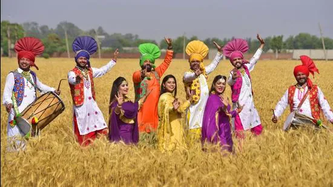
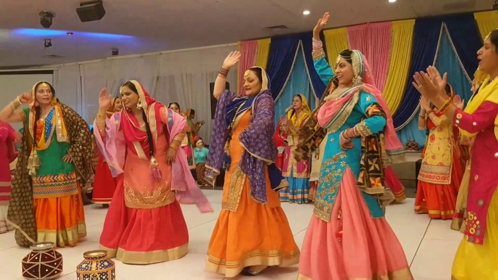
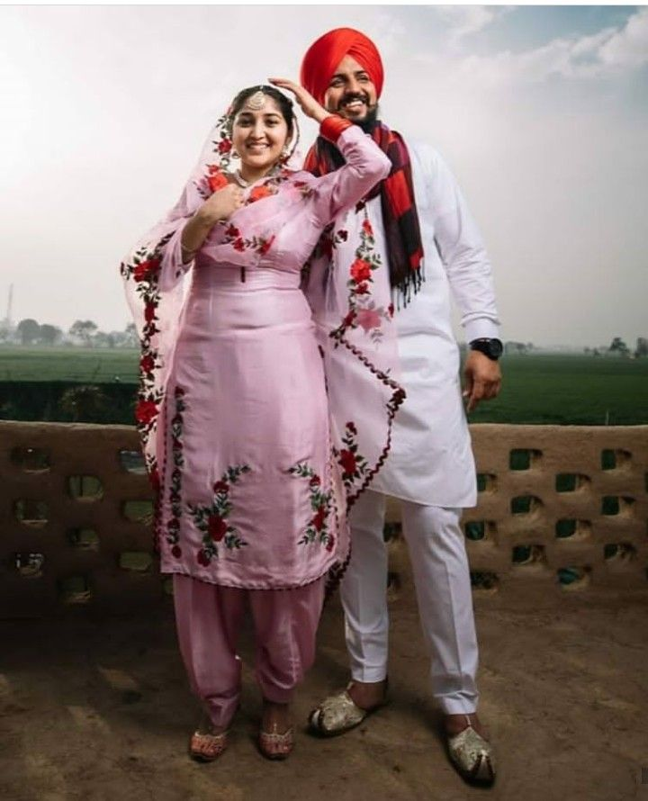
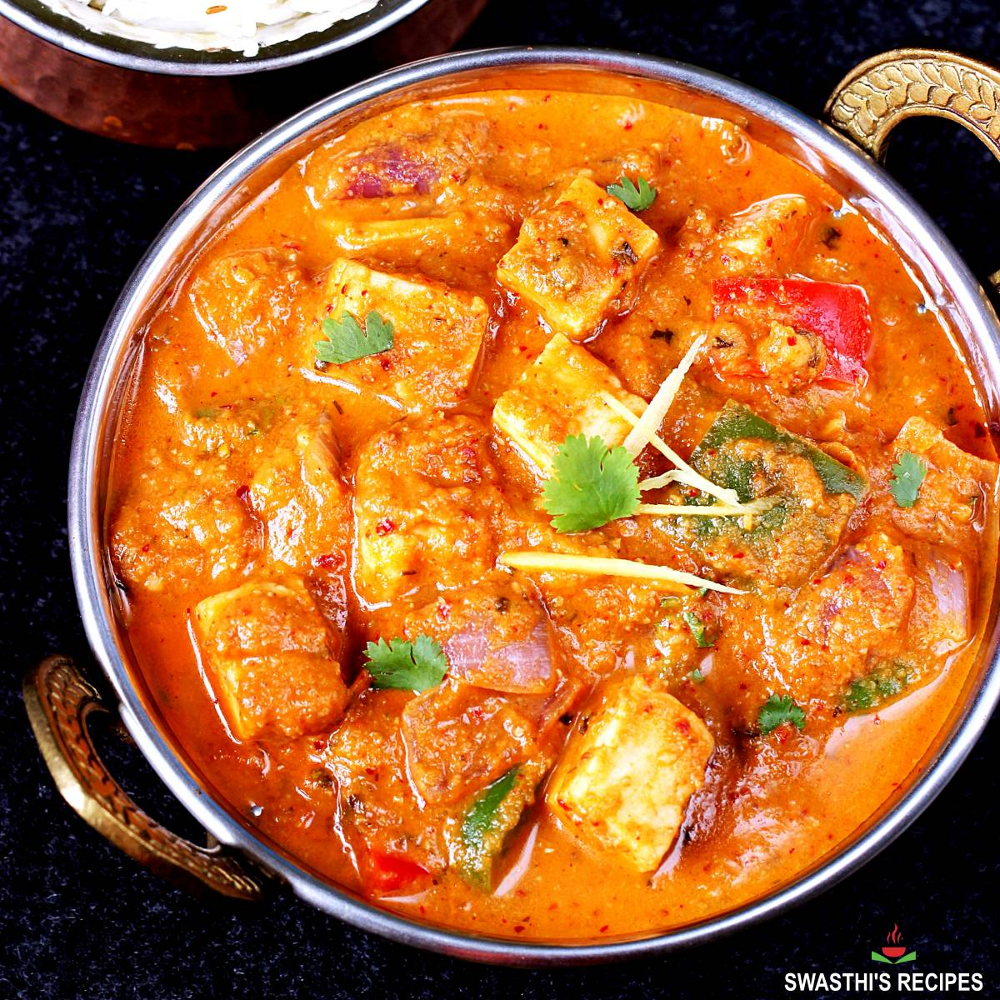
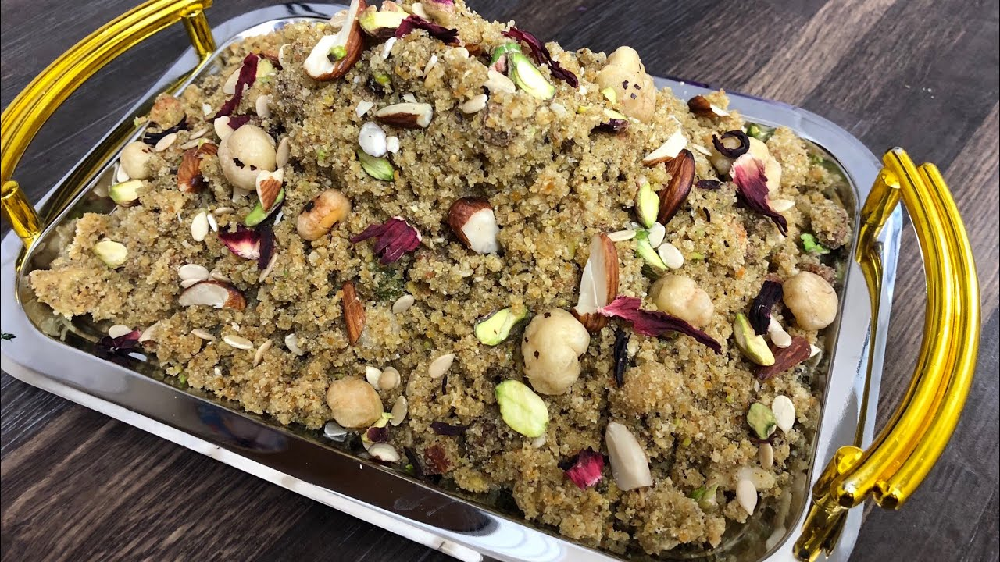
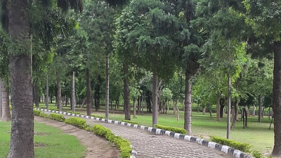
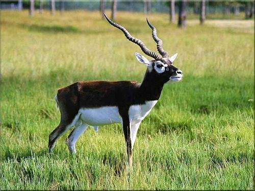
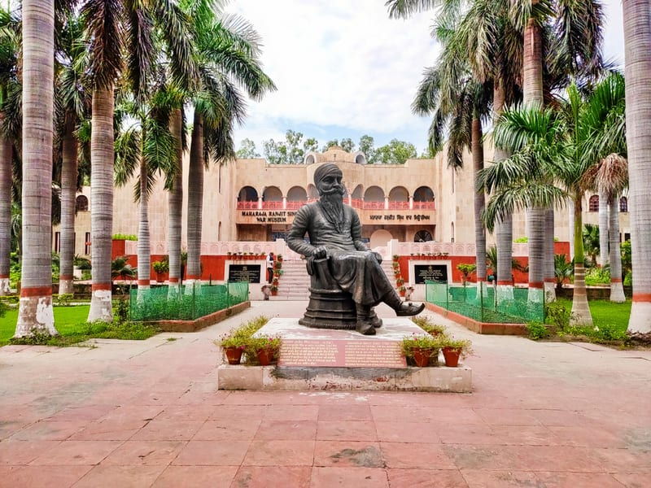
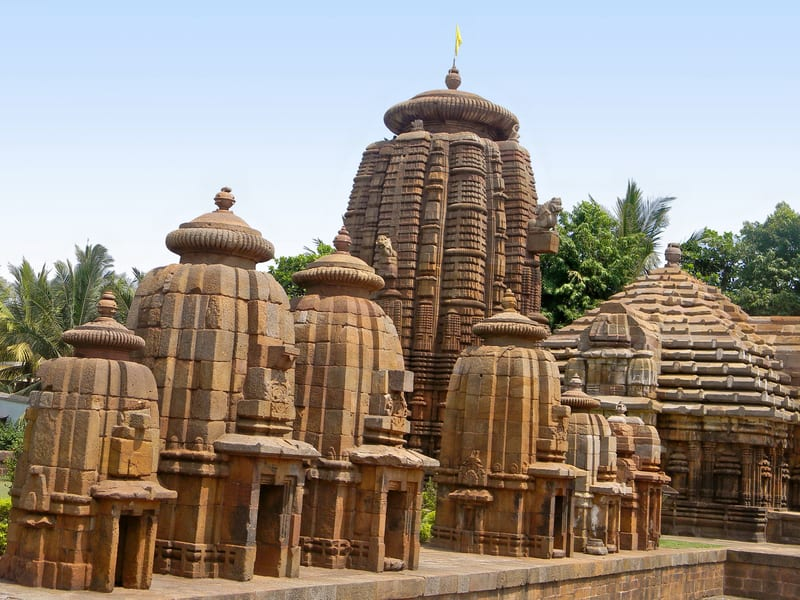

Punjab means the land of five rivers as the word Punjab is made up of two words ‘Panj’ + ‘Aab’ where ‘Panj’ means five in Punjabi and ‘Aab’ mean rivers in Punjabi. The five tributary rivers of the Indus River from which the region takes its name are the Sutlej, the Beas, the Ravi, the Chenab and the Jhelum. Of these, the first three flow through Indian Punjab, while the latter two flow entirely through Punjab, Pakistan.
Folk Dance
The dance styles of Punjab has more flavor with its bhangra, giddha, kikli and sammi.Bhangra" is one of the most famous dance forms of Punjab. With the loud drumming of the dholak, people dance with zeal to the tunes of the music. "Giddha" is another important variant of dance practiced by Punjabi women. Bolis are lyrically sung and danced by women.


Punjabi music has become popular in Bollywood too. Punjabis are known for their revelry and music forms an essential part of it.
Dress
The traditional dresses of Punjab are very colourful, unique and vibrant. Women wear Salwar kameez (Salwar is the bottom wear and kameez upper). These clothes are intricately designed and beautifully embroidered at homes in multi colours. Men wear a Turban with great pride. Initially, Hindus and Muslims also used to wear turbans, but now Sikhs can be only seen wearing them. Kurta is worn on the upper body, and Tehmat which are the baggy and balloon-ish Pyjamas are worn on the lower portion. Footwear preferred is Jooti which has been the traditional footwear worn by men and women for many years.
Cuisine
This cuisine has a rich tradition of many distinct and local ways of cooking. Tandoori style of cooking commonly known as tandoor is traditionally associated with Punjab, tandoori cooking is now famous in other parts of India, the UK, Canada, and many parts of the world.
Distinctively Punjabi cuisine is known for its rich, buttery flavors along with the extensive vegetarian and meat dishes. The main dishes include Sarson da saag and Makki di roti.
The popular recipes of Punjab are Masala, Chole, Paratha/Aloo Paratha, Halwa poori, Bhatoora, Falooda, Makhni doodh, Amritsari Lassi, Masala chai, Tea, Amritsari Kulchas, Phainis, Dahi vada, Dahi, Khoa, Paya, Aloo Paratha. Consumption of poultry, lamb, and goat meat are high in the Punjab area.
Khichdi made of mung beans and moth lentils and rice is also popular in Punjab, Paneer recipes like Shahi Paneer; Khoya Paneer, Paneer Kofta, Amritsari Paneer, Matar Paneer, paneer paratha are popular.

A traditional Punjabi Panjiri has a generous amount of almonds, walnuts, pistachios, dry dates, cashew nuts along with whole wheat flour, sugar, edible gum, poppy seeds, and fennel seeds to make the traditional dish of ‘panjri’ or also known as ‘dabra’.

Tourism
Golden Temple

Golden Temple, also known as Sri Harmandir Sahib, is one of the most prominent spots in the country visited by millions of devotees all year round. Located in Amritsar, this holy site was originally built in 16th century by the 5th Sikh guru, Guru Arjan Dev Ji. In the early 19th century, Maharaja Ranjit Singh covered the upper floors of the gurdwara with 400 kg of gold leaf, which gives it its anglicised name, the Golden Temple.
Jallianwala Bagh

Jallianwala Bagh unfolds the story of the most infamous massacre during the British rule that left a deep scar on Indians. Spread across a sprawling area of 6.5 acre, Jallianwala Bagh is a public garden situated in the pious city of Amritsar in the state of Punjab. Holding immense national importance, this memorial site was inaugurated on the occasion of Punjabi New Year on 13th April in 1961 by the then President of India, Dr Rajendra Prasad. Owing to its historical significance, Jallianwala Bagh tourism has attracted every tourist visiting the state.
Baradari Gardens
Baradari Gardens are located in the north of the old Patiala city. As the name suggests, it has twelve doors, each an entrance. The garden was constructed near the Baradari Palace, which was initially the residence of Emperor Rajinder Singh. He planted rare varieties of trees and flowers in this garden.
Abohar Wildlife Sanctuary
The Abohar Wildlife Sanctuary is a place where nature can be witnessed in its most expressive form. The area was declared a Wildlife Sanctuary in 2000, under the Wildlife Protection Act 1972. The sanctuary consists of 13 revenue villages, and is inhabited by the Bishnoi community. The Wildlife Area has tropical dry mixed deciduous forest, which is inhabited by several varieties of animals. The Black Buck Deer are found in plenty and freely roam even in domestic neighbourhood. Tourists can also spot porcupine, nilgai, wild boar, jackal and various other animals.
Maharaja Ranjit Singh War Museum
Maharaja Ranjit Singh War Museum was established in the year 1999 by the Punjab Government as a tribute to gallant soldiers. It is located on GT Road (Ludhiana–Amritsar Highway) and is around 6.7 km away from Ludhiana Railway Station. There is a large statue of Maharaja Ranjit Singh at the entrance of the museum.
Wagah Border

Wagah Border is an army outpost situated between the cities of Amritsar in Punjab, India and Lahore in Punjab, Pakistan. The only road borderline between the two countries, Wagah Border is marked by elaborate buildings, roads and barriers on its both sides. The entry gate of the outpost, called the Swarna Jayanthi Gate, commands a view of the lush environs.
Gurudwara Fatehgarh Sahib

Gurudwara Fatehgarh Sahib, situated on the Sirhind-Morinda Road, is an important religious venue for Sikhs. It is believed that in the year 1704, Sahibzada Fateh Singh and Sahibzada Zorawar Singh, sons of Guru Gobind Singh Ji, were bricked alive as per the order of Wazir Khan, the Faujdar of Sirhind. This Gurudwara was built to commemorate their sacrifice. The inner complex of the Gurudwara houses many famous structures, such as Gurudwara Bhora Sahib, Gurudwara Burj Mata Gujri, Gurudwara Shahid Ganj, Todar Mal Jain Hall and Sarovar.
Mukteshwar Temple
Mukteshwar Temple, located just 21 km away from Pathankot, is believed to be one of the holiest places in Punjab. This temple is dedicated to Lord Shiva and has a white marble Shivalinga with a copper yoni.